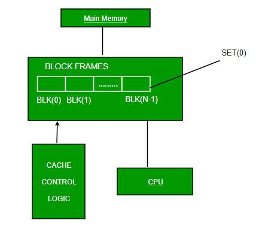

2. Associative Mapping
- Associative mapping overcomes the disadvantage of direct
mapping
- by permitting each main memory block can load into any line of
cache
- Memory address is interpreted as tag and word
- Tag uniquely identifies block of memory
- To determine whether a block is in the cache, the cache control
logic must simultaneously examine every line’s tag for a match
- Cache searching gets expensive
